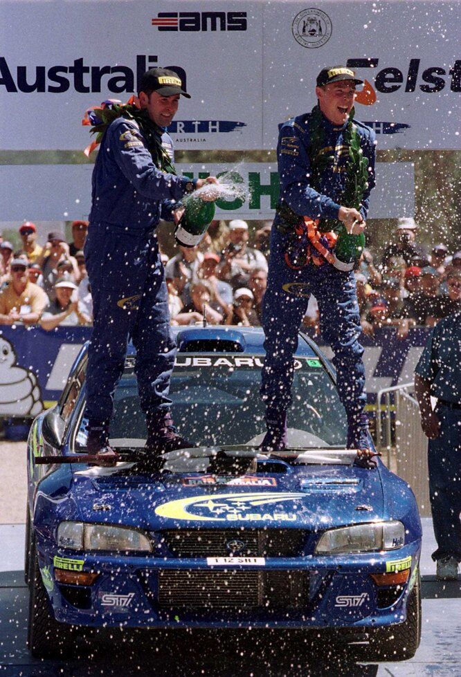
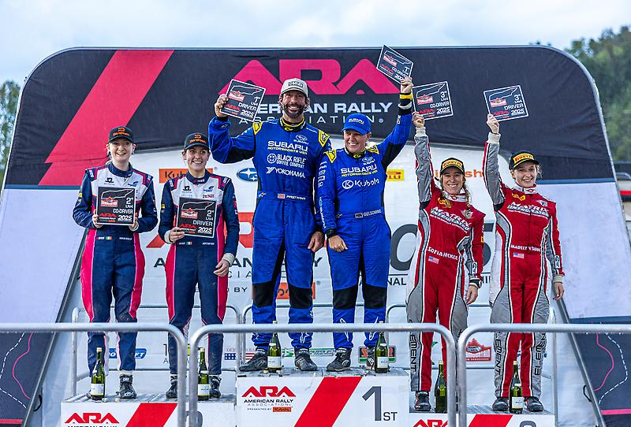

О КОМАНДЕ
Subaru World Rally Team (SWRT) — спортивная команда автомобильной компании Subaru в чемпионате мира по ралли (WRC). Команда использовала отличительные цвета — синий и желтый — цвета спонсора, бренда «State Express 555» (марка сигарет компании ВАТ, популярная в Азии). Логотипы Subaru и марки «Ралли 555» были размещены на автомобилях команды с 1993 по 2003 годы. Раллийная команда Subaru основана в 1984 году, однако, в привычном нам виде она существует с 1989 года, когда британская фирма Prodrive взяла на себя все техническое обслуживание, и база команды переехала из Японии в Англию.
Subaru использовали раллийную команду для демонстрации своей фирменной системы симметричная полного привода. Благодаря выступлениям в чемпионате мира Subaru планировали увеличить продажи своих автомобилей и популизировать систему AWD. Команда на протяжении всей своей истории была чрезвычайно сильна, конкурируя в WRC больше, чем любой другой производитель того времени. Subaru WRT выигрывали чемпионат три раза в зачете производителей (1995, 1996, и 1997), а также три раза в личном зачете водителей (1995, 2001 и 2003). Однако успехи команды пошли на спад начиная с сезона 2005 года, когда Петтер Солберг обеспечил вторую позицию в личном зачете. Результаты не оправдали ожиданий и стали объектом критики. В 2006 году на этапы чемпионата мира вывели обновленный автомобиль, на который возлагали большие надежды. Однако тот сезон стал полным разочарованием. Следующий 2007 год был не лучше, и Фил Миллс назвал его "вторым сезоном из ада". Обновленная Импреза не одержала ни одной победы на этапах чемпионата мира.
Галлерея

